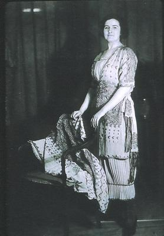

|  |
|
Fig 4: Harry Collins installation
at 1919 exhibition at the American Museum of Natural History showing original
designs and garments derived from them.
Herbert J. Spinden, “Creating a National Art,” The American Museum Journal 19, no.6, Dec. 1919. |